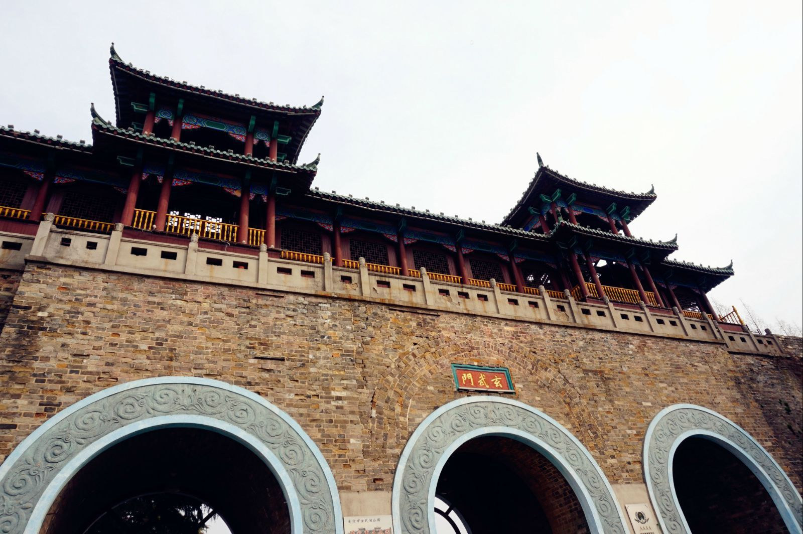
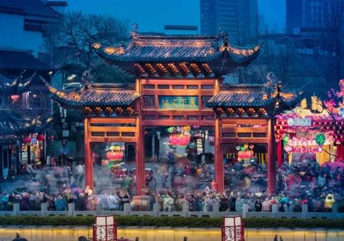
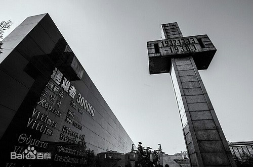

- 
- 
- 
玄武湖位于南京市玄武区，东枕紫金山、西靠明城墙、北邻南京站、南倚覆舟山，是江南地区最大的城内公园，也是中国最大的皇家园林湖泊、仅存的江南皇
家园林，被誉为“金陵明珠”，又称后湖、北湖。
玄武湖的人文历史最早可追溯至先秦时期；六朝时，成为皇帝操阅水师的场所，并被辟为皇家园林，南岸建有华林园、乐游苑等皇家
宫苑；北宋时，江宁府尹王安石“废湖还田”，玄武湖因此消失二百多年；元朝时，经过两次疏浚，玄武湖重新出现；明朝时，设为后湖黄册库，系皇家禁地；
清末举办南洋劝业会时，开辟丰润门（今玄武门），玄武湖成为游览区；民国十七年（1928年）8月，玄武湖作为公园正式对外开放。
2005年2月，玄武湖被列为国家AAAA级旅游景区；2008年9月，玄武湖公园被列为国家重点公园；2016年9月，玄武湖被列为国家级水
利风景区；2019年10月，玄武湖荣获“2019中国十大休闲湖泊”称号。